See what a galaxy is made of
AstroVista Lite fits the isophotes of galaxies, finds and measures the stars and galaxies around them, masks what is in the way and does arithmetic on whole images, all in one window. It is simple enough for a first class in astronomy and useful in everyday research.
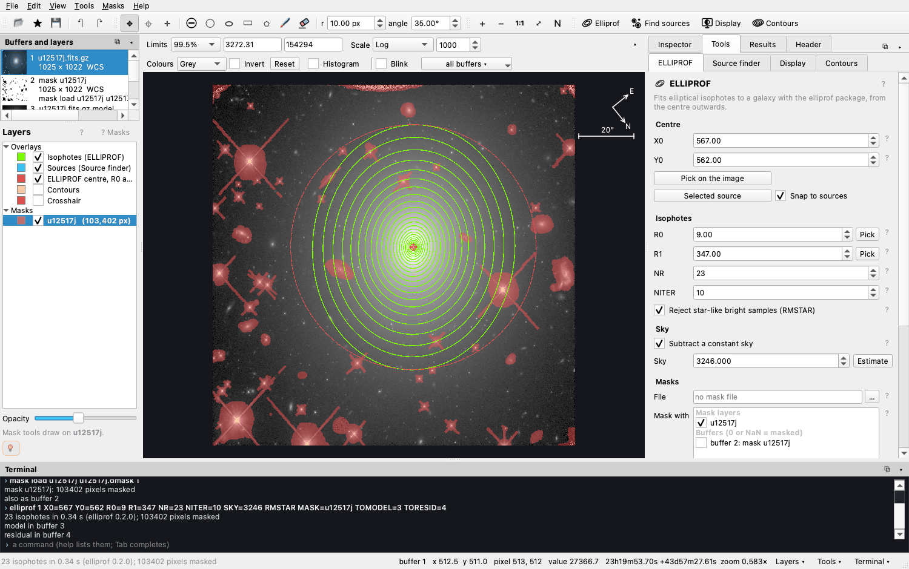
What it does
One window for the whole measurement
Isophote fitting
ELLIPROF fits ellipses to a galaxy's light from the centre outwards. You get a profile table, plots, the model galaxy and the residual image.
A source finder
Finds the stars and galaxies in the image and measures their position, shape, flux, magnitude and size, with SExtractor's names. A sortable catalogue and plots come with it.
Masks
Draw circles, ellipses, boxes, polygons and brush strokes, then turn and resize them before applying. You can also mask every found source at once. Undo and redo work throughout.
Pairs of galaxies
Two overlapping galaxies fitted in turn, each with the other's model taken out, after the sky is measured by segmentation. See the pair lesson.
Image arithmetic
Write [3] = [1] - [2],
median, where and clip: formulas worked out
pixel by pixel over whole images.
A terminal
Every action is a command, echoed as it runs. Save a session and run it again later, or give it to a class.
Built to teach
A first lesson, recipes, a FAQ and a ? beside every setting, all in the built-in documentation (F1).
Install
One command, on Linux or macOS
pip install AstroVista
astrovista --example # the UGC 12517 example, shipped with the package
astrovista galaxy.fits # or your own imagesPython 3.10 or later. Everything comes with pip install, the source finder
included. pip install astrovista is the same: PyPI ignores
capitals. A virtual environment keeps it apart from your other Python programs:
python3 -m venv ~/astrovista-env
source ~/astrovista-env/bin/activate
pip install AstroVistaSupported systems
| Supported | |
|---|---|
| macOS | 13 (Ventura) or later, Apple silicon and Intel |
| Linux, x86_64 | glibc 2.34 or later: Ubuntu 22.04+, Debian 12+, Fedora 35+, RHEL / Rocky / Alma 9+ |
| Linux, ARM | glibc 2.39 or later: Ubuntu 24.04+ |
| Windows | not yet (WSL2 with the Linux instructions should work, but is untested) |
| Python | 3.10 to 3.13; 3.14 works too, but SEP is then compiled during the install, which needs a C compiler |
When Python is missing or too old
Check with python3 --version. If it is older than 3.10, or missing, a
conda environment brings its own Python
(Miniforge is a small, free conda
installer):
conda create -n astrovista -c conda-forge python=3.12 pip
conda activate astrovista
pip install AstroVistaOn an older system where pip finds no Qt (No matching distribution found for PySide6), take Qt and the scientific libraries from conda-forge and only AstroVista from pip:
conda create -n astrovista -c conda-forge python=3.12 pip pyside6 pyqtgraph numpy scipy astropy matplotlib sep
conda activate astrovista
pip install AstroVistaStarting it
Images and masks can be loaded from the command line: -i puts images into
buffers 1, 2, … and -m adds mask layers.
astrovista -i galaxy.fits "frame.fits[sci]" -m galaxy.dmask
astrovista --run session.txt # replay a file of commandssudo apt install libxcb-cursor0 libxkbcommon-x11-0 libegl1 libgl1 libfontconfig1 libdbus-1-3
(Debian, Ubuntu), or
sudo dnf install xcb-util-cursor libxkbcommon-x11 mesa-libEGL mesa-libGL fontconfig dbus-libs
(Fedora).A tour
What you will see
Start here
The welcome screen opens the example galaxy, your own FITS image, or the First lesson. On the left, buffers hold images and layers hold what is drawn over them. The image is in the middle. On the right, the Inspector, the Tools, the Results and the FITS header sit in tabs. The terminal is below.
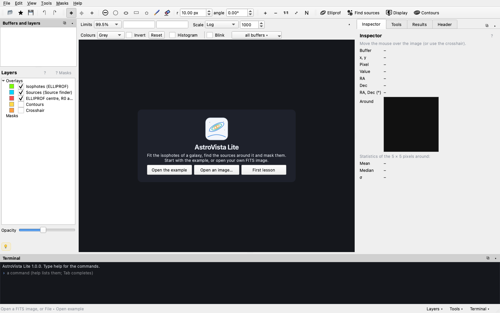
Look at the light
Faint light needs a stretched scale: Log, Asinh or a histogram equalisation. Choose the limits from percentiles or ZScale, or drag them on the histogram. Pick from twelve colour maps, and drag with the right mouse button for contrast and bias. None of this changes a pixel value.
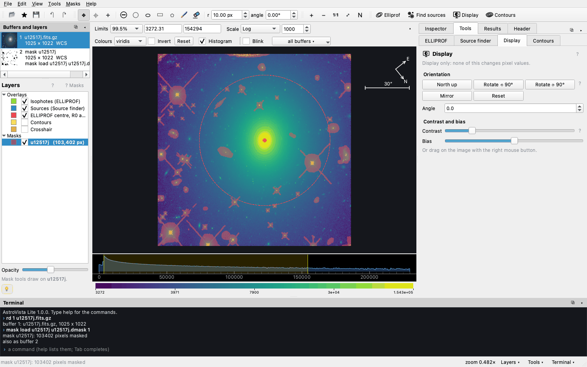
Contours
Lines of equal brightness, with DS9's settings: the number of levels, linear or log spacing, the smoothing, and the line colour and width. Each value can be edited.
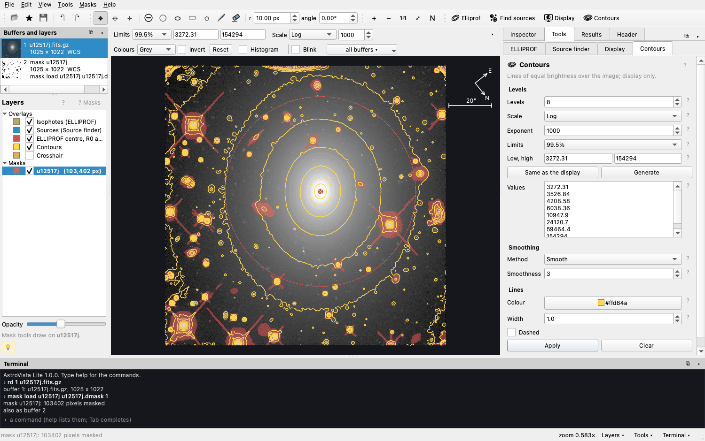
Inspect a pixel
The Inspector shows the pixel under the cursor or the crosshair: its value, its sky position (RA, Dec), a magnified view, and the statistics of the pixels around it.
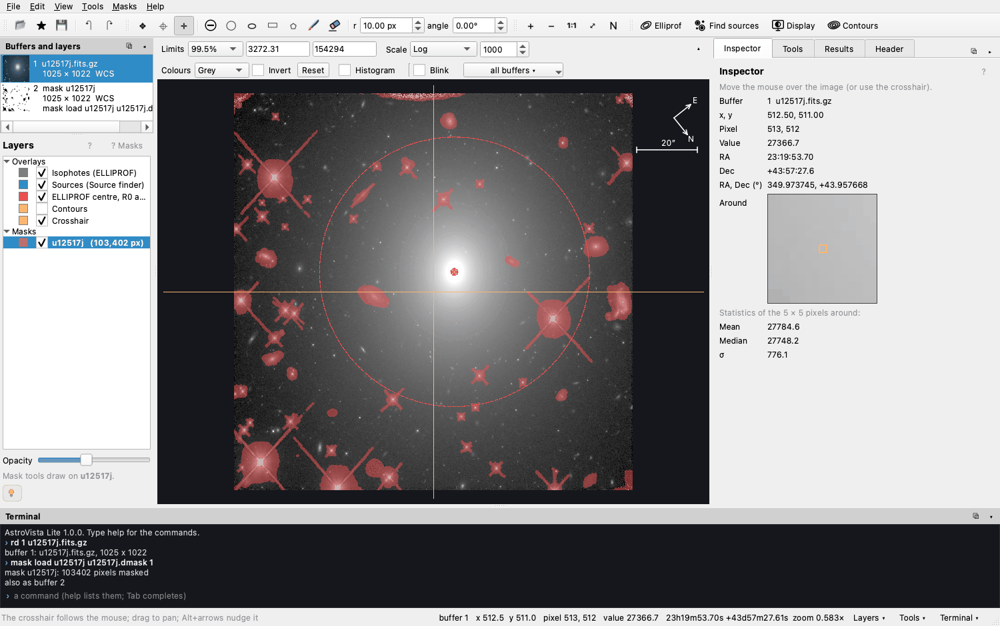
Mask what is in the way
Draw a shape and it waits, in magenta, until you apply it. Drag it to move it,
drag its squares to resize it, and turn it with the round handle or the
[ ] keys. Press Enter to apply it or Esc to cancel. Alt or
Shift unmasks.
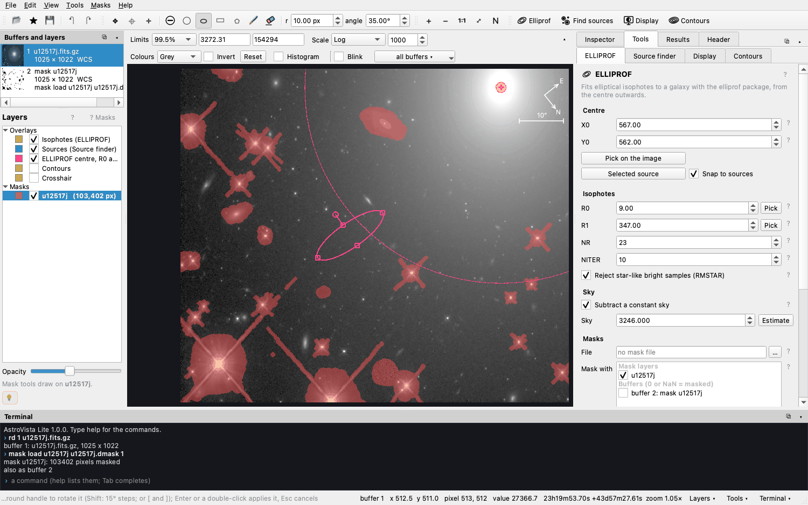
Fit the isophotes
Press Fit isophotes. ELLIPROF follows the galaxy's light outwards from R0 to R1. The model and the residual go into the buffers you choose; by default only free buffers are offered.

Read the profile
Plot the intensity, ellipticity, position angle or the higher harmonics against the radius or R¼. Tick R¼ law to fit de Vaucouleurs' law; for this galaxy, Re ≈ 126 pixels with a scatter of 0.07 mag. Save the plot as a PNG, or the table as an aligned CSV file.
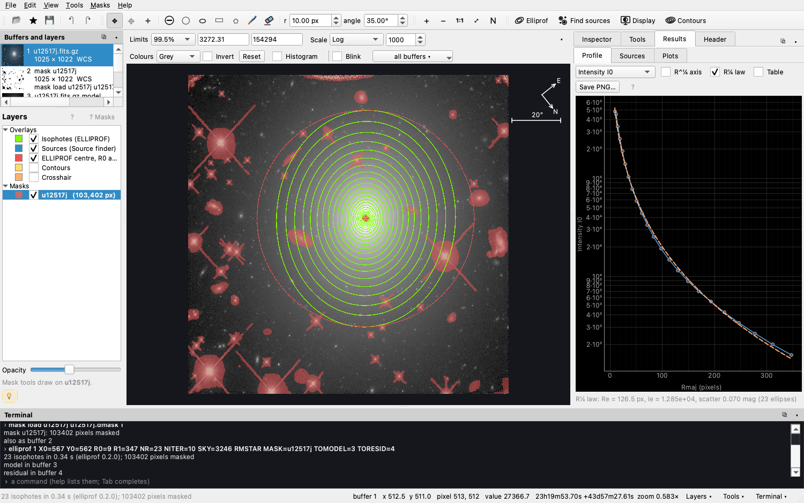
Find and measure sources
The Source finder detects every star and galaxy in the image and measures it with SEP, which implements SExtractor's algorithms. Click a source to find its row; sort the catalogue by any column; plot one column against another.

Look at what is left
The residual, the image minus the model, shows what a smooth ellipse cannot describe: dust lanes, discs, shells and companions. Tick Blink and press ← → to switch between the image, the model and the residual. When zoomed in, blinking keeps the same patch of sky through the WCS.
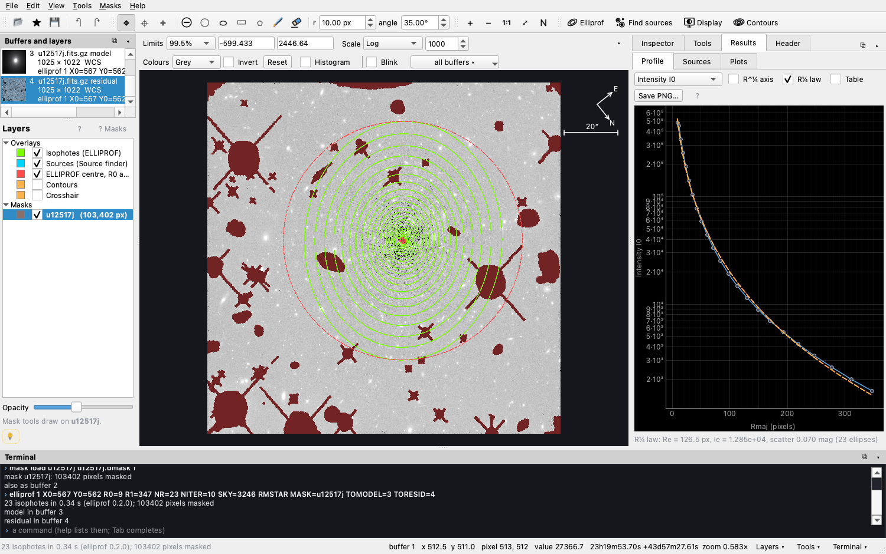
Type it, keep it, run it again
Every button runs a command that you can also type: arithmetic, statistics, masks, fits. Tab completes commands, buffers and file names. File ▸ Save the commands keeps the session as a script.
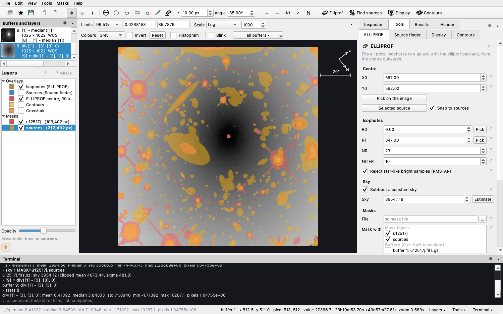
Figures for your paper or your class
Export what you measured
The profile and the plots are saved as PNG figures made with matplotlib. Tables are
saved as CSV files whose columns line up in any text editor, and read back with
pandas or astropy. Isophotes can be exported as DS9 regions.
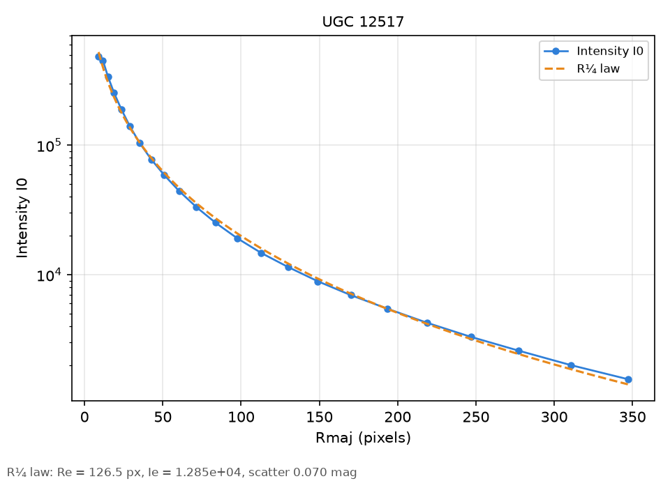
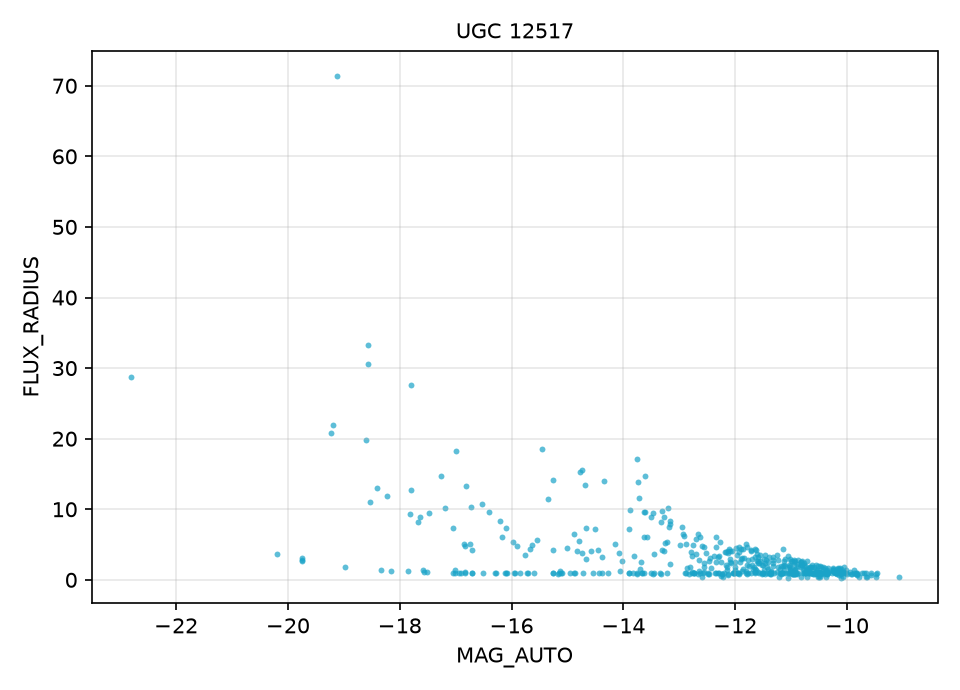
Learn
Help is built in
Press F1 for the documentation. It includes a thirty-minute First lesson, recipes, image arithmetic in detail, a glossary, a FAQ, troubleshooting, every command, and every setting explained. The ? beside each setting opens its own entry.
On this site: the tutorial walks through a whole measurement with questions for learners; The terminal explains how commands are written; the Command reference gives every command with its keywords and an example; and Commands & recipes collects worked examples.
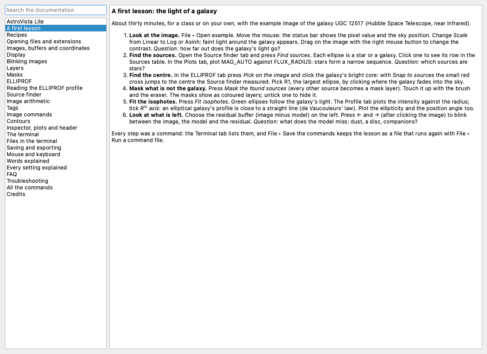
Credits
Citing and credits
If AstroVista Lite helps your work or your teaching, please cite its repository:
Kourkchi, E., AstroVista Lite, https://github.com/ekourkchi/AstroVista-LiteGitHub's Cite this repository button gives the same. For the measurements, please also cite:
- elliprof, for the isophotes;
- SEP (Barbary 2016, JOSS 1, 58) and SExtractor (Bertin & Arnouts 1996, A&AS 117, 393), for the source finder.
Built with Qt for Python (PySide6), pyqtgraph, matplotlib, NumPy, SciPy and Astropy. The example image of UGC 12517 (HST WFC3/IR, F110W) and its mask come from the elliprof example. AstroVista Lite is free software under the MIT licence.